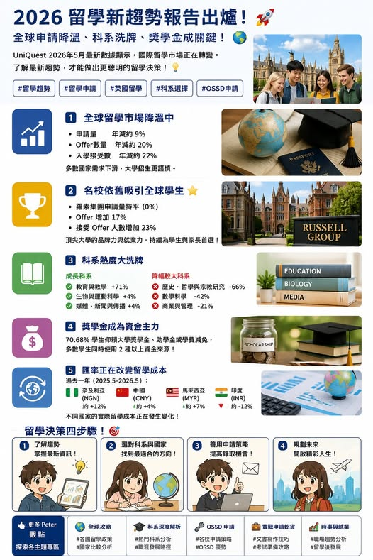

《看懂制度，選對世界》第一集
最新留學權威分析：看見 2027 留學趨勢
最新留學權威分析 : 看見2027留學趨勢

最新留學權威分析 : 看見2027留學趨勢
【 : 看見2027留學趨勢】 2026年5月英國國際招生資料統計 權威機構 UniQuest 2026年5月國際招生資料顯示，2026年9月入學的整體國際申請量較去年下降約9%，Offer量下降約20%，接受Offer人數下降約22%。市場熱度降溫之際，學生對教育投資的計算反而更加仔細。. 整體市場降溫，名校吸引力依然強 英國大學面對簽證合規與辦學許可風險，Offer發放更為審慎，部分合作機構也暫時縮減巴基斯坦與孟加拉市場。
另一端， 羅素大學集團呈現亮眼走勢： 申請量與去年持平 Offer量成長17% 接受Offer人數成長23% 這組數字透露一個訊號：市場規模縮小時，品牌聲望 就業成果與學術資源更強的大學，往往能集中更多優質申請者。英國留學市場正走向「強者更強」的分化格局。. 科系熱度重排，教育學成為最大亮點 2026年Offer持有人資料中， 與教學相關科系成長71%，遠高於其他領域。成長2%， 成長4%，媒體 也成長4%。
另一面，部分傳統科系面臨明顯降幅： 歷史 哲學與宗教研究：下降66% 數學科學：下降42% 綜合與一般研究：下降30% 設計 創意與表演藝術：下降22% 商業與管理：下降21% 建築 營建與都市規劃：下降21% 就連 與 也各下降約8%。熱門科系依舊具有市場需求，招生競爭與學生選擇卻更加集中於就業成果 實習機會與專業連結。. 資料顯示，70.68%的學生把大學獎學金 助學金或學費減免列為主要資金來源；54.06%計畫在學期間工作；41.50%仰賴政府補助；35.99%使用家庭支持或個人存款。
這代表 已成為招生競爭的核心條件。對台灣學生與家長而言，選校時除了學費金額，也要一起比較： 1獎學金額度與續領條件 2住宿費與生活費 3實習或帶薪實習機會 4畢業後的職涯服務 5整體留學預算與匯率變化 . 學生選校因素中，分數最高的是學費與資金支持87分，其次為畢業生就業成果84分，實習機會83分，住宿條件82分，教師背景與教學品質81分。大學排名得到73分，學校歷史與傳統則為69分。這份排序很有意思。學生依然重視名校品牌，決策重心卻逐步移向 2027留學申請該怎麼選？
對準備申請 的學生而言，可以先完成三項檢核： 這個科系的畢業生去向是否符合你的職涯目標？學校是否提供實習 企業合作與職涯輔導？獎學金與總預算是否符合家庭安排？申請名校依然值得努力，可是校名需要與科系品質 職涯成果 費用結構一起評估。選校的核心，逐漸由「哪間大學名次更高」轉向「哪個方案能帶來更好的長期價值」。. 結語 2026年的國際招生資料提醒學生與家長，英國留學仍具全球吸引力，市場卻進入更精準的選擇階段。
羅素大學集團持續成長，證明頂尖教育品牌仍有強大需求；獎學金 就業成果與實習資源排名前列，也代表新世代學生更重視教育與職涯之間的連結。未來選校，請把大學排名放進比較表，也把學費 獎學金 實習 畢業出路與匯率一起放進去。這份選擇，關係到一張文憑，也關係到往後數年的職涯方向與家庭資源配置。點擊下方標籤，看更多 Peter 的深度分析： 資料來源：UniQuest International Monthly Data Comparison, May 2026